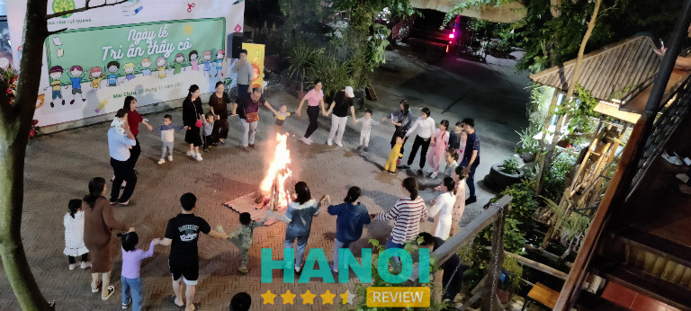
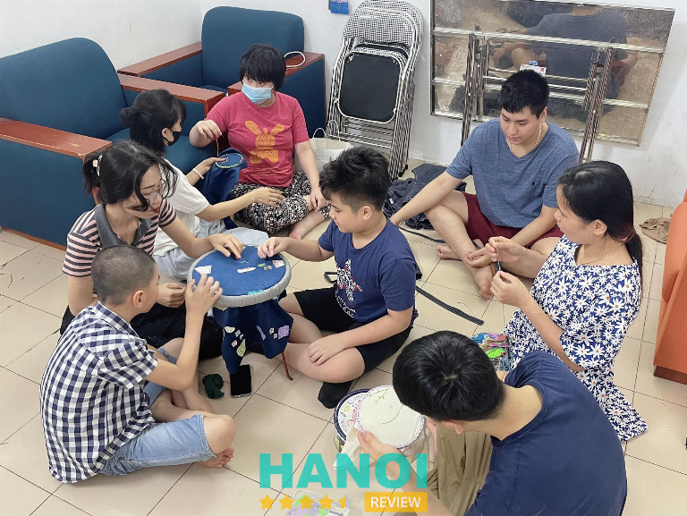
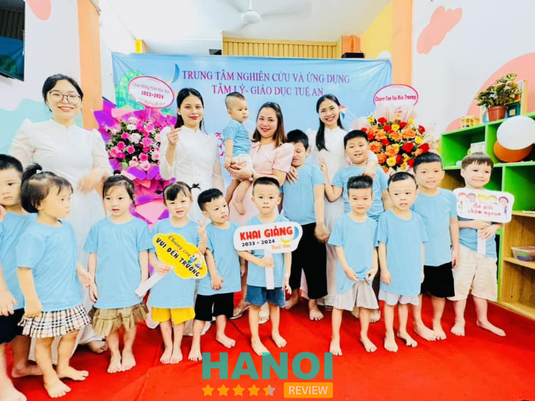
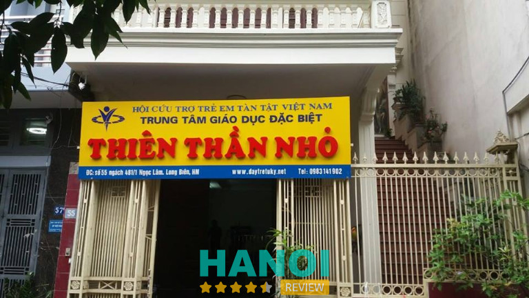
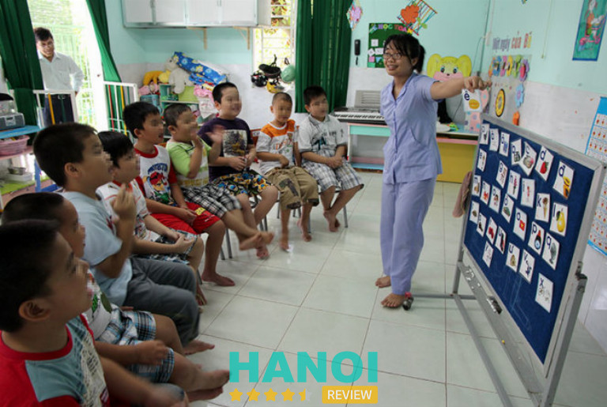
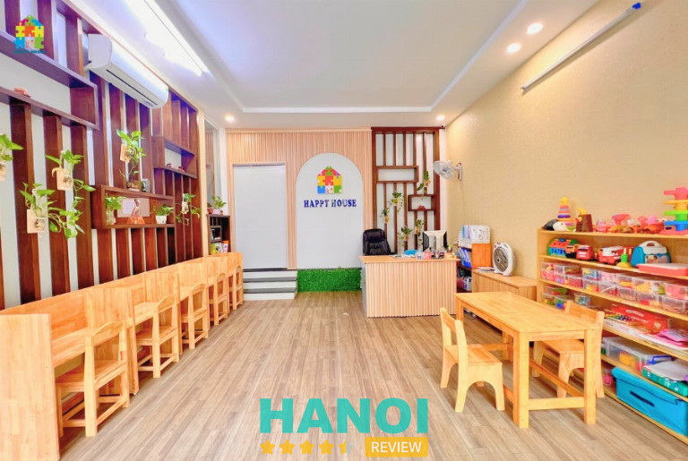
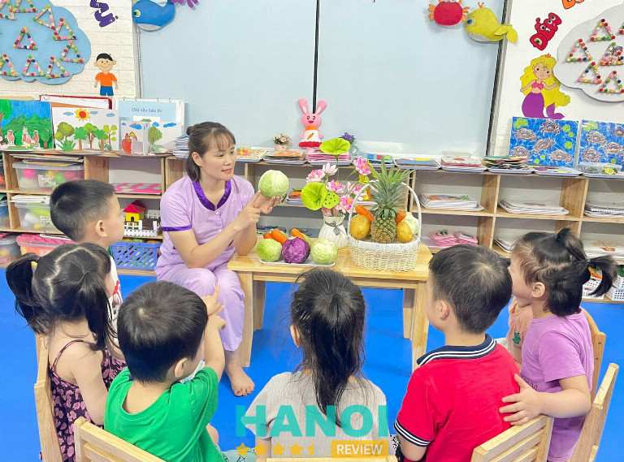

10 Trung tâm can thiệp trẻ tự kỷ tại Hà Nội chất lượng tốt nhất
Phát hiện con mình có dấu hiệu mắc bệnh tự kỷ nên đang tìm kiếm một trung tâm can thiệp trẻ tự kỷ tại Hà Nội chất lượng hàng đầu để điều trị kịp thời nhưng còn phân vân chưa biết địa chỉ nào đáng tin cậy thì có thể tham khảo một vài cơ sở được đề xuất trong bài viết này.
Top 10 Trung tâm can thiệp trẻ tự kỷ tại Hà Nội chất lượng tốt nhất
Với số lượng cơ sở giáo dục chuyên biệt tại thành phố Hà Nội hiện nay, việc chọn ra một địa chỉ đáng tin tưởng để gửi gắm con em mắc chứng tự kỷ, quả thật là chuyện không mấy dễ dàng. Vì thế, HaNoiReview đã tổng hợp danh sách 5 trung tâm phát hiện, can thiệp sớm trẻ tự kỷ để các bạn tham khảo.
Trung tâm Tâm lý Giáo dục chuyên biệt NHC Việt Nam – NHC Academy
Trung tâm Tâm lý Giáo dục chuyên biệt NHC Việt Nam là trung tâm chăm sóc, dạy trẻ tự kỷ chất lượng hàng đầu tại Hà Nội. Đây là đơn vị đạt tiêu chuẩn quốc tế, chuyên phát hiện và can thiệp sớm trẻ đặc biệt.
Đến với trung tâm, trẻ sẽ được làm các bài kiểm tra để xác định tình trạng nhận thức, năng lực hành vi. Tùy từng mức độ của mỗi trẻ, các chuyên gia sẽ đưa ra phác đồ trị liệu phù hợp, và hiệu quả nhất. Kết hợp khoa học vận động, và tâm lý, giáo dục thay vì chỉ sử dụng một phương pháp nhất định.
Cùng với các phương pháp trị liệu khác như: trị liệu bằng âm nhạc, châm cứu, giáo cụ, hay trị liệu tâm lý, nâng cao khả năng ngôn ngữ,… trẻ tự kỷ có thể cải thiện khiếm khuyết, biết cách thể hiện cảm xúc, giao tiếp tốt hơn, tăng vốn từ vựng, và hiểu được ngôn ngữ hình thể.

NHC Academy sở hữu đội ngũ chuyên gia tâm lý, giáo viên được đào tạo bài bản, chuyên môn cao, và giàu kinh nghiệm. Nắm rõ, và vận dụng các phương pháp can thiệp tiên tiến, đảm bảo trẻ được phát triển đúng cách, và toàn diện nhất. Giúp trẻ nhanh chóng hòa nhập cộng đồng, phá bỏ giới hạn bản thân.
Trung tâm chú trọng xây dựng môi trường học tập, vui chơi lý tưởng, phù hợp với quy trình can thiệp của trẻ. Đầu tư giáo cụ, trang thiết bị trong các phòng chức năng theo chất lượng quốc tế, góp phần hỗ trợ cho giáo viên trong quá trình chăm sóc, nuôi dạy. Hệ thống cơ sở hạ tầng cũng rất hiện đại, ứng dụng công nghệ tiên tiến.
Trẻ sẽ được theo dõi, thăm khám mỗi ngày, thông báo kết quả về tiến triển của trẻ cho phụ huynh nắm bắt. Ngoài ra, cha mẹ cũng được tư vấn, hướng dẫn cách nuôi dưỡng trẻ tự kỷ tại nhà để thúc đẩy quá trình phục hồi, trị liệu của trẻ diễn ra nhanh hơn, đạt hiệu quả cao nhất. Vì thế, đơn vị đã nhận được sự tín nhiệm và đồng hành của nhiều phụ huynh có con bị tự kỷ trong những năm qua.
Giờ làm việc: 8h00 – 18h00, mở cửa từ thứ Hai đến Chủ Nhật.
Thông tin liên hệ:
- Địa chỉ: 235, Phố Quan Hoa, Q. Cầu Giấy, TP. Hà Nội
- Điện thoại: 0906.818.123
- Email: giaoducnhc@gmail.com
- Website: giaoducnhc.vn
- Fanpage: FB.com/giaoducnhc
Trung tâm Tuệ Quang
Trung tâm Tuệ Quang là địa chỉ cơ sở can thiệp, nuôi dạy trẻ em tự kỷ uy tín bậc nhất thành phố Hà Nội. Với quan điểm gia đình là môi trường hoàn hảo, cha mẹ chính là giáo viên đồng hành cùng con trong quá trình khôi phục, điều trị tự kỷ. Trung tâm hướng đến mục tiêu giúp phụ huynh nâng cao nhận thức về trẻ tự kỷ, và tự triển khai các phương pháp dạy học, chăm sóc trẻ tại nhà.
Với đội ngũ giáo viên chuyên nghiệp, kinh nghiệm, cùng những chuyên gia đầu ngành của Hội đồng khoa học, mang đến những phương pháp giáo dục, can thiệp trẻ em tự kỷ hiệu quả. Bên cạnh đó, trung tâm còn hợp tác với những tổ chức, doanh nghiệp tại Việt Nam, và nước ngoài để hỗ trợ tài chính, tìm kiếm việc làm cho gia đình có trẻ tự kỷ, hay bệnh nhân tự kỷ trong độ tuổi lao động.

Cơ sở cung cấp môi trường lý tưởng cho trẻ tự kỷ học tập, vui chơi và rèn luyện những kỹ năng sống cần thiết, kỹ năng giao tiếp, cách tự chăm sóc, cách kết bạn, cách bày tỏ tình cảm,… giúp trẻ sớm hòa nhập với cuộc sống và cộng đồng.
Trung tâm còn tạo cơ hội cho nhân viên, giáo viên học tập, tu nghiệp tại các cơ sở y tế, trường học để nâng cao kỹ năng chuyên môn, giúp ích cho hoạt động giảng dạy, nuôi dưỡng.
Tuệ Quang cũng thường nơi đây sẽ tổ chức những buổi hội thảo tư vấn, hỗ trợ phụ huynh tìm hiểu về các liệu trình nuôi dạy trẻ em tự kỷ. Và thường xuyên liên lạc để hỗ trợ điều chỉnh phương pháp nếu chưa phù hợp.
Khung giờ hoạt động: 9h00 – 17h00, làm việc từ thứ Hai đến thứ Bảy, riêng chiều thứ Bảy mở cửa đến 15h30.
- Địa chỉ: 11, Ngõ 25, Phố Trần Hữu Tước, Q. Đống Đa, Hà Nội
- Điện thoại: (024)32.171.624
- Email: tuvan@tuequang.vn
- Website: tuequang.vn
- Fanpage: FB.com/tuequang.edu.vn
Trung tâm Hand in Hand
Trung tâm Hand in Hand là cơ sở can thiệp, hỗ trợ hòa nhập cho trẻ em tự kỷ tại Hà Nội. Được đồng sáng lập bởi 4 người mẹ có con mắc chứng này với sứ mệnh thay đổi cuộc sống, cách đối xử và ánh nhìn của cộng đồng đối với trẻ em đặc biệt. Những điều mà Hand in Hand đã, đang và sẽ làm thực sự mang ý nghĩa to lớn cho các bệnh nhân đặc biệt này.
Đối tượng mà trung tâm hướng đến không gói gọn trong phạm vi trẻ em, mà cả những người tự kỷ trưởng thành. Song song với các bài học thay đổi nhận thức, điều chỉnh hành vi, nâng cao khả năng ngôn ngữ và cải thiện giao tiếp, là các hoạt động giúp trẻ tự sinh hoạt, và tu dưỡng bản thân.

Dựa vào tình trạng bệnh của từng trẻ mà nhân viên sẽ đưa ra lời khuyên và lộ trình điều trị được cá nhân hóa phù hợp, cụ thể. Trung tâm cũng lắp đặt đầy đủ các thiết bị, dụng cụ tân tiến, cần thiết cho quá trình phục hồi, và phát triển của trẻ.
Trẻ được tham gia trực tiếp vào các lớp học nấu ăn, dọn dẹp giúp rèn luyện sự nhẫn nại, tính cẩn thận. Qua đó, có thể phụ giúp cha mẹ tại nhà. Hand in Hand vận dụng phương pháp kết nối và sẻ chia trong quy trình chăm sóc, giảng dạy, giúp trẻ dễ dàng hòa hợp với môi trường xung quanh.
Trung tâm luôn đề cao môi trường học tập, vui chơi mang tính nhân văn, kết hợp với các phương pháp can thiệp đã qua nghiên cứu kỹ càng, đảm bảo đạt hiệu quả và toàn diện nhất. Đội ngũ giáo viên, chuyên gia đều được trang bị nền tảng vững chắc, luôn chăm lo cho các bé với sự yêu thương, ân cần, và kiên nhẫn.
Giờ làm việc: 7h00 – 17h00, hoạt động từ thứ Hai đến thứ Sáu.
Thông tin liên hệ:
- Địa chỉ: 6, Lô C2, KĐT Yên Hoà, Ngõ 20 Phố Trần Kim Xuyến, P. Yên Hòa, Q. Cầu Giấy, TP. Hà Nội
- Điện thoại: 0904.241.970
- Email: hih.autism@gmail.com
- Website: hih-autism.weeblysite.com
- Fanpage: FB.com/Home.Of.Autism.Hanoi
Trung tâm dạy trẻ tự kỷ Phương Thanh
Chính thức đi vào hoạt động từ năm 2011, Trung tâm Phương Thanh luôn là đơn vị dẫn đầu về phương pháp can thiệp ở trẻ em tự kỷ tại Hà Nội. Cùng với không ngừng đổi mới, và tận tâm trong suốt 12 năm phát triển, cơ sở ngày càng giúp được nhiều trẻ em đặc biệt tự tin hòa nhập với xã hội, phát huy tiềm năng bản thân.
Một số dịch vụ nổi trội tại trung tâm như: đánh giá trí tuệ, tâm lý cho trẻ em; tư vấn, và can thiệp tại trung tâm/nhà/trường mầm non; cố vấn chuyên môn cho những đơn vị nuôi dạy/cơ sơ y tế khác; tập huấn cho giáo viên và phụ huynh.
Quy trình can thiệp tại trung tâm Phương Thanh:
- Đánh giá đầu vào, đánh giá định kỳ mỗi 6 tháng, thông qua kế hoạch can thiệp theo tháng, ban giám đốc, ban cố vấn tham dự giờ học.
- Ban cố vấn, và giám đốc trung tâm sẽ đánh giá tâm lý, trí tuệ cho trẻ trước, sau đó tư vấn cụ thể với phụ huynh về tình trạng của trẻ, và lựa chọn loại hình can thiệp phù hợp, hiệu quả nhất.
- Trẻ sẽ có lộ trình can thiệp riêng: lớp học cá nhân/nhóm, lớp điều hòa cảm giác, lớp phục hồi chức năng, lớp trị liệu,… Cùng những khóa tập huấn cho cha mẹ nhằm hỗ trợ quá trình phát triển cho bé khi ở nhà.
- Giảng viên đánh giá trên nhiều tiêu chí khác nhau hằng tháng
- Định kỳ 6 tháng, ban cố vấn và ban giám đốc sẽ tiến hành đánh giá chuyên sâu, và có thể điều chỉnh phương pháp phù hợp hơn với sự thay đổi của trẻ.

Đội ngũ chuyên gia tâm lý, giảng viên đứng lớp với tấm lòng thương yêu trẻ em, tận tình, tốt nghiệp loại giỏi các chuyên ngành tâm lý giáo dục, giáo dục đặc biệt, sư phạm mầm non,… được ban cố vấn tạo điều kiện tham gia dự giờ, và nâng cao kỹ năng thường xuyên.
Phương châm của trung tâm chính là tình yêu với trẻ em, nắm bắt tốt tâm lý trẻ, kết hợp với phương pháp trị liệu phù hợp với từng trẻ, đảm bảo mang lại kết quả cao trong thời gian sớm nhất.
Thời gian hoạt động: 7h30 – 17h45, làm việc từ thứ Hai đến thứ Bảy.
Thông tin liên hệ:
- Địa chỉ: 5, Ngõ 51 Nguyễn Viết Xuân, P. Khương Mai, Q. Thanh Xuân, TP. Hà Nội
- Điện thoại: (024)66.805.731
- Email: ttphuongthanh.edu@gmail.com
- Website: trung-tam-day-tre-tu-ky-phuong-thanh.business.site
- Fanpage: FB.com/phuongthanh.edu.vn
Trung tâm Nghiên cứu và Ứng dụng Tâm lý – Giáo dục Long Biên
Là đơn vị thuộc Khoa Học Tâm Lý – Giáo dục Việt Nam, Trung tâm nghiên cứu và ứng dụng tâm lý – giáo dục Long Biên có chuyên môn về giáo dục, nuôi dưỡng trẻ tự kỷ nói riêng, và trẻ em đặc biệt nói chung. Cơ sở cung cấp các chương trình can thiệp sớm, tiền tiểu học, tiểu học phù hợp với mọi vấn đề của từng trẻ.
Các chuyên gia tâm sẽ dựa vào mức độ, để phân loại các em vào một trong các chương trình sau, gồm: cơ bản (từ 18 tháng – 3 tuổi), hòa nhập (3-6 tuổi), tiền tiểu học (4-6 tuổi) và giáo dục đặc biệt (6-12 tuổi),… Không chỉ dạy lý thuyết mà còn có các trò chơi để trẻ cải thiện các kỹ năng xã hội, khả năng tự chăm sóc. Giúp trẻ tự kỷ mức độ nhẹ có thể tham gia vào môi trường giáo dục một cách chủ động hơn.

Trung tâm còn áp dụng âm nhạc, hội họa, yoga vào quá trình can thiệp, để bé được tăng khả năng cảm thụ thông qua các giác quan. Các hoạt động này rất tốt cho việc phát triển tâm lý, cảm xúc, hành vi, thể chất của trẻ tự kỷ. Trẻ còn được học cách dùng ngôn ngữ, điều chỉnh hành vi để thể hiện cảm xúc thay vì chỉ la hét.
Giáo viên, chuyên gia tâm lý tại trung tâm được đào tạo chuyên sâu và bài bản, tập huấn chuyên môn định kỳ, cùng với sự tận tâm, quan tâm chu đáo. Vì vậy, cha mẹ có thể hoàn toàn an tâm con em mình sẽ được khôi phục, và trị liệu tốt nhất với lộ trình được cá nhân hóa chi tiết, và hiệu quả.
Sau nhiều năm hoạt động, đơn vị không ngừng phấn đấu, nỗ lực, vươn tầm trở thành trung tâm can thiệp sớm cho trẻ tự kỷ chất lượng hàng đầu thành phố.
Cơ sở hoạt động từ: 7h00 – 11h00 và 14h00 – 18h00, từ thứ Hai đến thứ Bảy.
Thông tin liên hệ:
- Địa chỉ: 12, Ngõ 95 Vũ Xuân Thiều, P. Phúc Lợi, Q. Long Biên, TP. Hà Nội
- Điện thoại: 0937.679.383
- Email: giaoduchoanhaplb@gmail.com
- Website: giaoduchoanhaptuky.com.vn
- Fanpage: FB.com/hoanhap.giaoduc
Xem thêm: 10 Trung tâm tâm lý trị liệu tại Hà Nội uy tín nhất, dịch vụ tận tâm
Trung tâm giáo dục đặc biệt Tuệ An
Giáo dục đặc biệt Tuệ An cũng là một trong những trung tâm dạy trẻ tự kỷ tại Hà Nội đáng để các bậc phụ huynh cân nhắc. Trung tâm tập trung phát triển từ thể chất, hành vi đến các kỹ năng xã hội khác. Trẻ dần chủ động trong giao tiếp, tỏ bày tâm tư, biểu cảm,biết bắt chước, kết bạn,..
Trẻ tự kỷ học tại trung tâm sẽ được giảng dạy, chăm sóc trực tiếp bởi các chuyên gia trong ngành tâm lý học, giảng viên với nhiều năm kinh nghiệm, có năng lực chuyên môn, và tình yêu thương, chăm lo cho các bé. Các phương pháp giảng dạy được xây dựng dựa trên các nghiên cứu khoa học kết hợp với các dụng cụ trực quan giúp trẻ dễ dàng tiếp thu và thực hành.

Hằng tháng, trung tâm còn mời về các chuyên gia, bác sĩ, thạc sĩ tâm lý để kiểm tra, đánh giá tổng quát kết quả cho từng trẻ. Qua đó, thầy cô có thể điều chỉnh lộ trình can thiệp phù hợp hơn, khắc phục các khuyết điểm, giúp trẻ phục hồi và phát triển một cách tốt nhất.
Trung tâm không ngừng đầu tư, tu bổ cho cơ sở vật chất, hạ tầng, hệ thống phòng học, không gian vui chơi, rèn luyện, trang bị đủ các giáo cụ và dụng cụ chất lượng cao, phục vụ tốt nhất cho quá trình phục hồi chức năng, trị liệu.
Hơn 8 năm hoạt động trong lĩnh vực giáo dục chuyên biệt cho trẻ em, nơi đây đã trở thành địa chỉ được rất nhiều gia đình có con em mắc chứng tự kỷ lựa chọn để đồng hành trên chặng đường mang đem cuộc đời mới cho trẻ em đặc biệt.
Thời gian mở cửa: 8h00 – 19h00, hoạt động từ thứ Hai đến thứ Bảy.
Thông tin liên hệ:
- Địa chỉ: 56, Ngõ 89 Bằng Liệt, P. Hoàng Liệt, Q. Hoàng Mai, TP. Hà Nội
- Điện thoại: 0983.149.800
- Email: nguyenhuong92.gddb@gmail.com
- Fanpage: FB.com/giaoducdacbiethanoi
Trung tâm giáo dục đặc biệt Thiên Thần Nhỏ
Không thể bỏ qua Trung tâm Thiên Thần Nhỏ khi nói đến những trung tâm nuôi dạy trẻ tự kỷ trong thành phố. Cơ sở nhận được sự hài lòng, yên tâm của các quý phụ huynh khi gửi gắm con mình đến học. Trẻ sẽ được các giáo viên giúp đỡ, hỗ trợ trong việc phát hiện sớm những hội chứng tự kỷ, đồng hành trong việc dạy dỗ, và chăm sóc sức khỏe toàn diện.
Sở hữu đội ngũ bác sĩ có chuyên môn, kỹ thuật giảng dạy và tay nghề điều trị đỉnh cao. Cùng với sự cố vấn trực tiếp từ các chuyên gia nước ngoài, sẽ cung cấp những liệu trình điều trị hiệu quả, rõ ràng. Mang đến những thay đổi to lớn ở trẻ, đúng với nguyện vọng của cha mẹ.

Với các chương trình dạy học chuyên biệt bổ ích, hoạt động trải nghiệm sinh động, đa dạng, giúp trẻ cải thiện đáng kể các kỹ năng thiết yếu, sớm hòa nhập với cộng đồng. Tùy vào mức độ phục hồi của từng trẻ, giảng viên sẽ chỉnh sửa, và đưa ra phương pháp trị liệu mới sao cho phù hợp, giúp đẩy nhanh thời gian chữa trị.
Hệ thống cơ sở hạ tầng đạt chuẩn chất lượng, các loại giáo cụ, dụng cụ học tập được để tâm chuẩn bị kỹ càng, nhằm phục vụ tốt nhất cho việc giáo dục, can thiệp. Những buổi ngoại khóa cũng được đầu tư tổ chức thường xuyên, và diễn ra an toàn, suôn sẻ để trẻ được vui chơi, tiếp xúc với thiên nhiên, cải thiện kỹ năng xã hội,…
Khung giờ mở cửa: 7h00 – 20h00, làm việc từ thứ Hai đến thứ Bảy.
Thông tin liên hệ:
- Địa chỉ: 55, Ngõ 481/8 Phố Ngọc Lâm, P. Ngọc Lâm, Q. Long Biên, TP. Hà Nội
- Điện thoại: 0983.141.902
- Emai: nguyenmai1902@gmail.com
- Website: daytretukylongbien.edu.vn
- Fanpage: FB.com/trungtamdaytrechamnoitailongbien
Trung tâm Nắng Mai
Địa chỉ tiếp theo mà HaNoiReview giới thiệu đến các phụ huynh có con mắc hội chứng tự kỷ, đó là trung tâm Nắng Mai trực thuộc Viện nghiên cứu Truyền thống và Phát triển. Đây là trung tâm chăm sóc, dạy trẻ em đặc biệt thông qua các chương trình phù hợp, đã qua kiểm duyệt và được đánh giá rất cao.
Trung tâm tư vấn cho phụ huynh về liệu pháp điều trị được xây dựng phụ thuộc vào mức độ bệnh của trẻ, và hướng dẫn cách nuôi dạy trẻ tại nhà. Phối hợp cùng giáo viên ở trung tâm hỗ trợ trẻ nhanh chóng cải thiện triệu chứng, đảm bảo khỏe mạnh và phát triển một cách toàn diện.
Ngoài ra, các bác sĩ tại trung tâm hợp tác nghiên cứu và triển khai các phương pháp chuyên sâu, mô hình hỗ trợ theo nhóm, nhằm nâng cao nhận thức, tư duy của trẻ, đồng thời giúp các bé cùng học tương trợ, nâng đỡ lẫn nhau.

Đội ngũ y bác sĩ, giáo viên tại trung tâm đều tốt nghiệp từ các trường học nổi tiếng cả nước trong lĩnh vực giáo dục đặc biệt nên có kiến thức sâu rộng, nắm vững chuyên môn, cùng với thái độ chuyên nghiệp, tình yêu thương, tâm huyết, tận tình. Chắc chắn sẽ đến cho trẻ những thay đổi tích cực trong thời gian sớm nhất.
Không gian phòng học, phòng điều trị rộng lớn, vệ sinh sạch sẽ, trang bị đa dạng thiết bị, dụng cụ dạy học hiện đại, công nghệ. Bên cạnh học tập, thường xuyên tổ chức có hoạt động trải nghiệm thú vị, vui nhộn cho các em tham gia.
Thời gian mở cửa: 7h00 – 18h00 , làm việc từ thứ Hai đến thứ Bảy, riêng chiều thứ Bảy hoạt động đến 17h30. Những gia đình không thể đưa con em đến cơ sở cũng có thể yên tâm, vì trung tâm sẽ gửi giáo viên đến điều trị tận nhà.
Thông tin liên hệ:
- Địa chỉ: 36, Ngõ 47, Phố Lưu Hữu Phước, KĐT Mỹ Đình, Q. Nam Từ Liêm, TP. Hà Nội
- Điện thoại: 0986.981.150
- Email: nangmaicentre@gmail.com
- Facebook: FB.com/daytretuky.vn
Hệ thống âm ngữ trị liệu Happy House
Trung tâm Happy House là một cơ sở y tế chuyên cung cấp dịch vụ can thiệp trẻ tự kỷ được nhiều phụ huynh tin tưởng tại Hà Nội. đặc biệt. Do chính các bậc phụ huynh chung tay thành lập nên trung tâm không mang yếu tố thương mại, hoạt động với một mục tiêu duy nhất là xây dựng môi trường phát triển lý tưởng để trẻ em đặc biệt trong khu vực Hà Thành được học tập, và chăm sóc trong điều kiện tốt n
Do đó, đơn vị luôn ưu tiên chất lượng giáo dục, và chú trọng nghiên cứu thêm chương trình phát triển về tư duy, thể chất cho mỗi trẻ. Sau nhiều năm hoạt động, trung tâm đã trở thành nơi giúp trẻ em đặc biệt được học hỏi, vui chơi, và trưởng thành.Nơi đây còn có đội ngũ chuyên gia, giáo viên giỏi chuyên môn, trình độ nghiệp vụ cao, làm việc trách nhiệm, có thâm niên trong lĩnh vực nuôi dưỡng, giảng dạy cho trẻ em đặc biệt.

Trung tâm ứng dụng các phương pháp can thiệp tiêu chuẩn nên phù hợp với mọi trẻ. Ngoài ra, còn thường xuyên tổ chức những hoạt động ngoại khóa để trẻ tăng cường kỹ năng sống, khả năng giao tiếp xã hội, cải thiện ngôn ngữ,….
Đặc biệt, trẻ còn có thể khơi gợi các khả năng tiềm tàng để trẻ ngày càng hoàn thiện hơn. Nhờ đó, dễ dàng bước vào cuộc sống, nhanh chóng hòa nhập với cộng đồng, biết yêu thương, chăm sóc bản thân và người khác.
Cơ sở hạ tầng được thiết kế rộng rãi, thoáng đãng, sạch sẽ, các phòng chức năng được có đầy đủ trang thiết bị dạy học, giáo cụ hiện đại, tân tiến, đem đến cho trẻ những trải nghiệm tốt nhất.
Thông tin liên hệ:
- Địa chỉ: 10, Ngách 29, Ngõ 49 Huỳnh Thúc Kháng, Q. Đống Đa, TP. Hà Nội
- Điện thoại: (024)32.012.270
- Email: happyhouse.hanoi@gmail.com
- Website: tretukyhanoi.com.vn
- Fanpage: FB.com/tretukyhanoi.vn
Trường chuyên biệt Ánh Sao
Trường Ánh Sao được thành lập vào năm 2006 cùng với sứ mệnh can thiệp sớm, giáo dục hòa nhập cho trẻ tự kỷ, giúp chúng vượt qua khó khăn bệnh tật, phát triển các kỹ năng sinh hoạt cơ bản để sớm hòa nhập vào cuộc sống một cách tự tin nhất. Là một trong những cơ sở được nhiều người có con bị tự kỷ biết và trao gửi niềm tin.
Đội ngũ chuyên gia tâm lý, giáo dục và giáo dục đặc biệt trực tiếp đánh giá mức độ, và tư vấn cụ thể cho phụ huynh về chương trình chăm sóc, giảng dạy phù hợp. Ngoài ra, họ tập huấn cho giáo viên và cha mẹ về chuyên môn và kỹ năng dạy, chăm sóc trẻ khi học ở trung tâm, và lúc ở nhà.
Ánh Sao tự tin với các giảng viên chuyên ngành giáo dục đặc biệt, sư phạm mầm non,… tốt nghiệp từ các Trường Đại học, Cao đẳng sư phạm uy tín hàng đầu, dày dặn kinh nghiệm, và yêu quý trẻ em. Chính họ sẽ trực tiếp tham gia các tiết học cá nhân và cả học nhóm, chắc chắn sẽ dạy học, chơi đùa, và chăm lo tốt nhất cho các em.

Trường thường xuyên cập nhật những phương pháp trị liệu hiện đại để điều trị cho trẻ. Xây dựng phác đồ trị liệu dựa trên tình trạng phục hồi của từng trẻ, cam kết đem tới những kết quả chất lượng nhất, đúng theo mong muốn của gia đình.
Ngoài ra, trường Ánh Sao cũng rất chú trọng đầu tư vào cơ sở hạ tầng tiện nghi, ứng dụng công nghệ cao, các phòng học, phòng chức năng được xây dựng sinh động, màu sắc, gắn lắp các máy móc, thiết bị, giáo cụ cần thiết đạt tiêu chuẩn chất lượng cao.
Trường chuyên biệt Ánh Sao mở cửa cả ngày, sẵn sàng chào đón trẻ em đặc biệt đến chữa trị bệnh.
Thông tin liên hệ:
- Địa chỉ: 69, Ngõ 225 Phố Vọng, P. Đồng Tâm, Q. Hai Bà Trưng, TP. Hà Nội
- Điện thoại: 0912.720.946
- Website: tretuky.org.vn
- Fanpage: FB.com/people/Trường-Chuyên-Biệt-Ánh-Sao
7 Tiêu chí lựa chọn trung tâm can thiệp trẻ tự kỷ tại Hà Nội chất lượng cao
Mỗi trung tâm can thiệp sẽ có một chương trình nuôi dạy trẻ em tự kỷ chuyên biệt. Tuy nhiên, đều phải đáp ứng tiêu chuẩn của Bộ Giáo Dục, phải được các cơ sở chuyên môn thông qua và kiểm duyệt, hướng đến sự phát triển toàn diện ở trẻ.
Đưa trẻ tự kỷ đến điều trị tại cơ sở giáo dục kém chất lượng sẽ tác động tiêu cực đến kết quả can thiệp, thời gian trị liệu dài mà không đem lại hiệu quả. Do đó, trước đưa ra quyết định, các bậc phụ huynh nên dựa vào các tiêu chí sau:
- Kinh nghiệm và danh tiếng: Cha mẹ nên chọn trung tâm có độ nhận diện cao và đã mở cửa lâu năm trong khu vực thành phố. Vì một cơ sơ phải có độ uy tín cao thì mới có thể đứng vững trên thị trường cạnh tranh khắc nghiệt như hiện nay.
- Chương trình giáo dục: Mỗi trẻ tự kỷ cần một phác đồ điều trị riêng biệt để phục hồi, và phát triển tốt nhất. Vì thế, cha mẹ nên chọn trung tâm cá nhân hóa chương trình giảng dạy, chăm sóc rõ ràng, phù hợp với bé nhà mình.
- Đội ngũ giảng viên: Cha mẹ nên chọn trung tâm có đội ngũ thầy cô chuyên môn cao, giàu kinh nghiệm, đặc biệt nhẫn nại, kiên trì trách và yêu thương trẻ con. Để tránh trường hợp trẻ bị bạo hành, bỏ bê, cha mẹ nên đồng hành cùng con trong suốt hành trình can thiệp tại trung tâm.
- Cơ sở hạ tầng: Cha mẹ nên chọn trung tâm chú trọng vào việc xây dựng phòng học rộng, thoáng, sạch sẽ, đầy đủ tiện nghi, giáo cụ cần thiết trong quá trình phục hồi, trị liệu.
- Mức học phí: Cha mẹ nên chọn các trung tâm giáo dục có mức chi phí phù hợp với khả năng tài chính của gia đình, có chương trình hỗ trợ cho hoàn cảnh khó khăn.
- Dịch vụ khách hàng: Cha mẹ nên chọn trung tâm có đội ngũ tư vấn viên nhiệt tình giải đáp thắc mắc về quá trình can thiệp, tận tình hướng dẫn cách chăm sóc, nuôi dạy trẻ tại nhà.
- Đánh giá: Cha mẹ nên chọn trung tâm nhận được đánh giá cao trên các phương tiện truyền thông, báo chí hay khảo sát ý kiến của những phụ huynh có con đang điều trị tại đó.
Trẻ em tự kỷ nên được can thiệp, học tập, và tu dưỡng tại các cơ sở nổi tiếng, uy tín để trẻ có thể phục hồi chức năng nhanh chóng, từ đó tự tin giao tiếp, hòa nhập với xã hội, và phát triển bản thân một cách toàn diện, từ trí tuệ đến thể chất.
Trên đây là bài tổng hợp thông tin của 5 trung tâm can thiệp trẻ tự kỷ tại thành phố Hà Nội được công nhận về chương trình giảng dạy. HaNoiReview hy vọng bài viết này hữu ích, và giúp bạn lựa chọn được một địa chỉ đáng tin cậy, và phù hợp thông qua những tiêu chí kể trên.
Có thể bạn quan tâm
- 10 Trung tâm giáo dục đặc biệt tại Hà Nội có chương trình dạy tốt nhất
- 10 Địa chỉ trị liệu trầm cảm tại Hà Nội uy tín, hiệu quả, chuyên nghiệp
DOANH NGHIỆP: Đăng tải thông tin MIỄN PHÍ.
Tin đọc nhiều


10 Trường mầm non tại khu Linh Đàm uy tín, môi trường tốt nhất cho...
Lựa chọn trường mầm non tốt cho con luôn là mối quan tâm hàng đầu của các bậc phụ huynh hiện nay. Khu vực Linh...
5 Trường mầm non tại Q. Nam Từ Liêm giáo dục hiện đại
Để đảm bảo các bé có một khởi đầu tốt đẹp, việc tìm kiếm một trường mầm non đáng tin cậy là rất quan trọng....

10 Trung tâm dạy trẻ chậm nói tại Hà Nội uy tín, tận tâm, chuyên...
Theo thống kê cho thấy có đến khoảng 20% trẻ em chậm nói, sử dụng ngôn từ chậm hơn so với nhiều bạn cùng trang...

10 Trung tâm giáo dục đặc biệt tại Hà Nội tốt nhất
Trong nhà có trẻ em mắc chứng tự kỷ, chậm phát triển, tăng động,... và bạn đang tìm kiếm một trung tâm giáo dục đặc...

Trở thành người đầu tiên bình luận cho bài viết này!